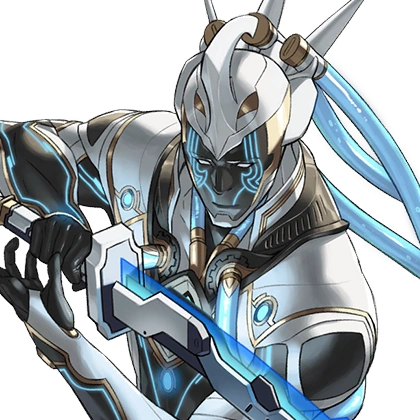

Aegaeon

In Xenoblade Chronicles 2, Aegaeon is a Special Legendary Blade. He has the ability to give his Driver, Emperor Niall, immense strength. After concludingEmperor Niall is unqualified to be a Driver, he eventually gives Mòrag the Core Crystal. In combat, Aegaeon assumes the role of a Tank, uses the water element, and brandishes a Chroma Katana.
Aegaeon is a Blade in Torna ~ The Golden Country that can give his Driver Hugo and his allies a great deal of power.
Quotes
"I would… appreciate it if you could stop staring, now. You're making me blush."
---
"Uh… Beg pardon, Lady Lora, but worrying about His Majesty's well-being is part of MY responsibilities."
---
"I too would appreciate something sweet."